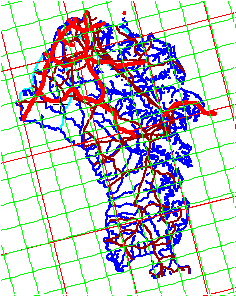
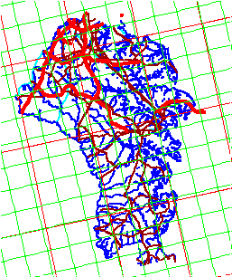
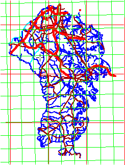
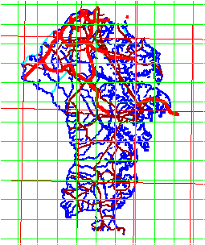
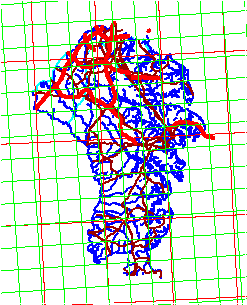

These maps all show Anne Arundel County, with Tiger line data. The lat/long graticule is in red, and the UTM zone 18 grid in green.
|
 |
 |
 |
 |
 |
| Albers Equal Area Conical Graticule and UTM grid will be rotated. |
Lambert Conformal Conic Graticule and UTM grid will be rotated. |
Mercator projection Graticule will be parallel to the edges of the map. UTM grid will be rotated. |
UTM Zone 18 UTM grid for the zone will be parallel to the map edges. Lat/Long graticule will be rotated. |
UTM Zone 17 (with zone 18 grid) UTM grid for the zone will be parallel to the map edges. UTM grid for adjacent zone will be rotated. Lat/Long graticule will be rotated. |
These are not to exactly the same scale, but they are close, and the only real differences are in the rotation of the map due to the different projections. There are differences in the distortions, but they are very hard to see at this scale.
Last revision 11/1/2011